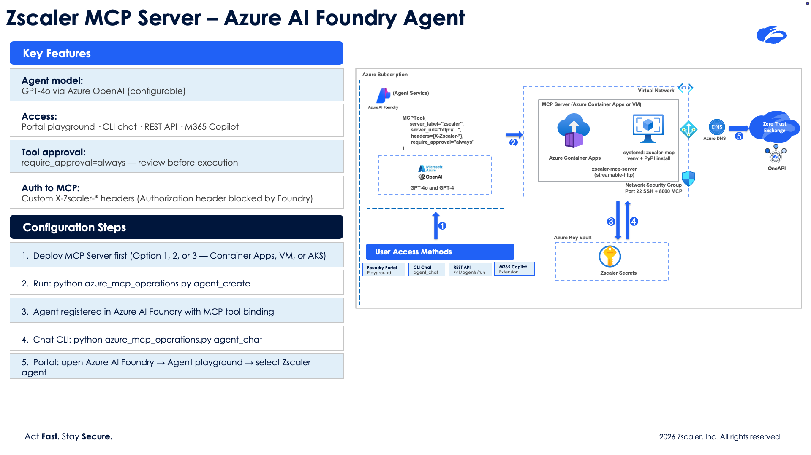
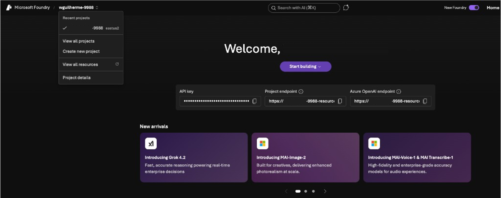
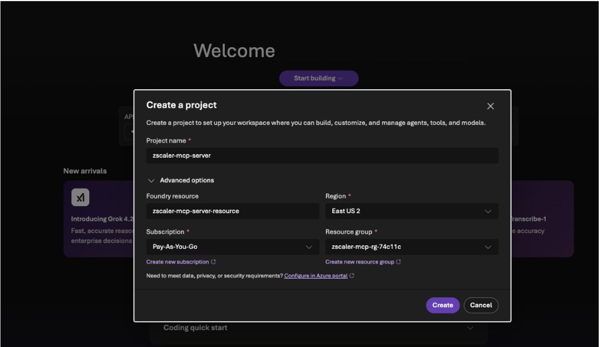
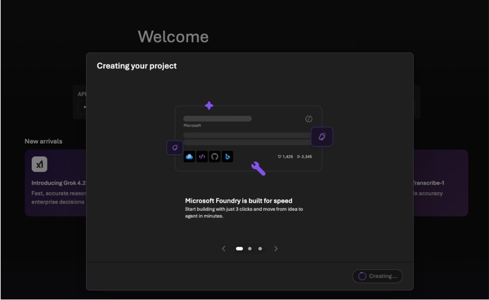
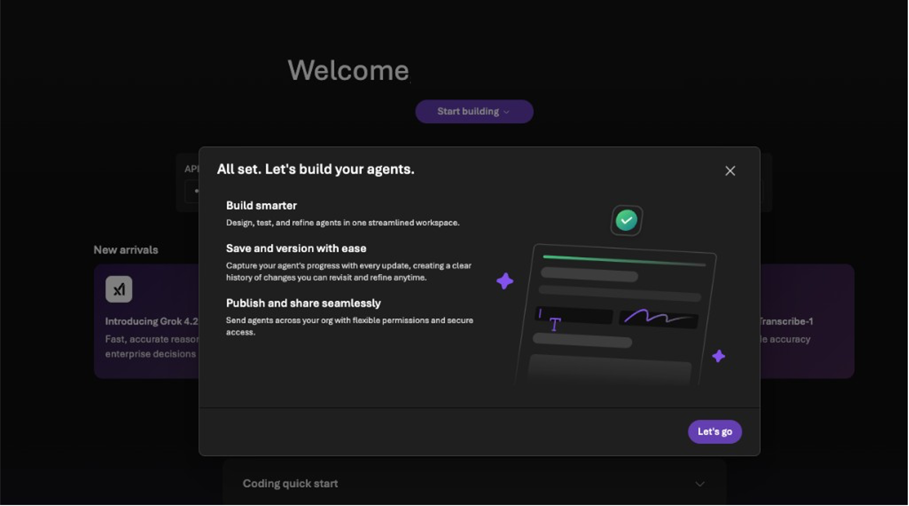
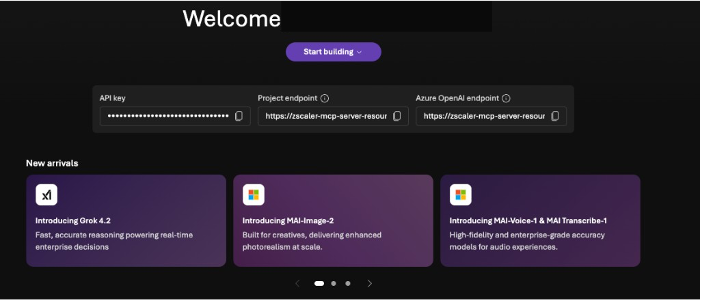
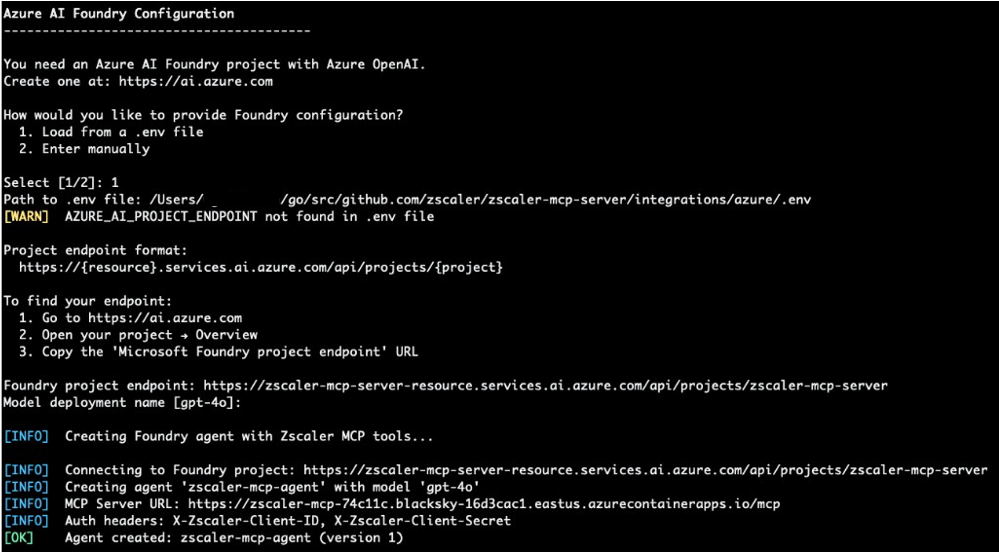

Azure AI Foundry Agent¶
This guide covers integrating the Zscaler MCP Server with Azure AI Foundry to create autonomous security agents powered by GPT-4o (or GPT-4) that can call 300+ Zscaler tools.
There are two ways to configure the Foundry agent:
Method |
Description |
Best For |
|---|---|---|
API (CLI) |
Create and manage the agent via |
Automation, CI/CD, scripted deployments |
UI (Portal) |
Configure the agent through the Azure AI Foundry portal |
Visual setup, exploring capabilities |
Both methods result in the same Foundry agent — they differ only in how you create and manage it.
Architecture¶

Data flow:
You send a natural language request (e.g., “List my ZPA application segments”)
Azure AI Foundry’s GPT-4o interprets the request and selects the right MCP tool
Foundry calls your deployed MCP server via the
MCPToolintegrationThe MCP server authenticates to the Zscaler API and returns results
GPT-4o formats the response and presents it to you
Prerequisites¶
Before setting up the Foundry agent, you need:
A deployed Zscaler MCP Server — Deploy via Container Apps or VM first:
cd integrations/azure python azure_mcp_operations.py deploy
This gives you a public MCP URL (e.g.,
https://zscaler-mcp-xxx.azurecontainerapps.io/mcp).An Azure AI Foundry project — See Creating a Foundry Project below.
Azure CLI authenticated —
az loginPython packages — installed automatically when needed, or manually:
pip install azure-ai-projects azure-identity
Environment variables (in your
integrations/azure/.envfile):AZURE_AI_PROJECT_ENDPOINT=https://<resource>.services.ai.azure.com/api/projects/<project> AZURE_OPENAI_MODEL=gpt-4o
Creating a Foundry Project¶
If you don’t already have an Azure AI Foundry project, follow these steps:
1. Open Azure AI Foundry¶
Go to ai.azure.com. You’ll see the Foundry home page with your recent projects (if any).

2. Create a New Project¶
Click Create new project from the left sidebar dropdown. Fill in:
Project name: e.g.,
zscaler-mcp-serverFoundry resource: Select an existing resource or create a new one (e.g.,
zscaler-mcp-server-resource)Region: Choose a region (e.g.,
East US 2)Subscription: Your Azure subscription
Resource group: Select or create one
Click Create.

3. Wait for Project Creation¶
Foundry will take a few seconds to provision the project and its resources.

4. Project Ready¶
Once complete, you’ll see a confirmation dialog — click Let’s go.

5. Copy the Project Endpoint¶
The project overview page displays three key values:
API key — Used for direct API access (not needed for the CLI method)
Project endpoint — This is the
AZURE_AI_PROJECT_ENDPOINTvalue you needAzure OpenAI endpoint — Used for direct OpenAI API access
Copy the Project endpoint URL. It looks like:
https://<resource>.services.ai.azure.com/api/projects/<project>

6. Add to Your .env File¶
Paste the endpoint into your integrations/azure/.env file:
AZURE_AI_PROJECT_ENDPOINT=https://zscaler-mcp-server-resource.services.ai.azure.com/api/projects/zscaler-mcp-server
AZURE_OPENAI_MODEL=gpt-4o
When running agent_create, if this variable is set in the .env file, it is automatically detected and you won’t be prompted for it.
Method 1: API (CLI) Integration¶
The CLI method uses azure_mcp_operations.py subcommands to manage the agent lifecycle.
Step 1: Deploy the MCP Server¶
If you haven’t already:
cd integrations/azure
python azure_mcp_operations.py deploy
Follow the interactive prompts to select deployment target, auth mode, and credentials. Note the MCP URL printed at the end.
Step 2: Create the Foundry Agent¶
python azure_mcp_operations.py agent_create
This command:
Reads the deployed MCP server URL and auth mode from the deployment state
Prompts for your Foundry project endpoint and model name (or reads from
.env)Builds authentication headers based on your MCP auth mode
Creates the agent in Azure AI Foundry with an
MCPToolpointing to your MCP server
The script will prompt for Foundry configuration. You can load it from a .env file (option 1) or enter manually (option 2):
Azure AI Foundry Configuration
----------------------------------------
How would you like to provide Foundry configuration?
1. Load from a .env file
2. Enter manually
Select [1/2]: 1
Path to .env file: integrations/azure/.env
Tip
If AZURE_AI_PROJECT_ENDPOINT is set in your .env file, it is automatically detected. Otherwise, you’ll be prompted to paste the endpoint URL.
Once complete, the script displays a summary:

============================================================
Foundry Agent Created
============================================================
Agent Name: zscaler-mcp-agent
Version: 1
Model: gpt-4o
MCP Server: https://zscaler-mcp-xxx.azurecontainerapps.io/mcp
Next steps:
1. Start a chat session:
python azure_mcp_operations.py agent_chat
Step 3: Chat with the Agent¶
Interactive session:
python azure_mcp_operations.py agent_chat
Single query:
python azure_mcp_operations.py agent_chat -m "List all ZPA application segments"
The chat session features interactive multi-turn conversation, MCP tool approval prompts (approve/deny each tool call), per-response token usage tracking, and an end-of-session summary (duration, messages, cumulative tokens).
In-chat commands:
Command |
Description |
|---|---|
|
Show available commands, usage tips, and example prompts |
|
Show agent info, project endpoint, session duration, tokens, and messages sent |
|
Clear the terminal screen |
|
Reset the conversation context (clears response chain, token count, message count) |
|
End the chat session and display a summary |
Step 4: Manage the Agent¶
# Check agent status
python azure_mcp_operations.py agent_status
# Delete the agent
python azure_mcp_operations.py agent_destroy
# Delete without confirmation prompt
python azure_mcp_operations.py agent_destroy -y
Authentication Between Foundry and MCP Server¶
The Foundry agent authenticates to the MCP server using custom HTTP headers passed via MCPTool.headers. The headers vary by auth mode:
MCP Auth Mode |
Headers Sent by Foundry |
|---|---|
Zscaler |
|
API Key |
|
JWT / OIDCProxy |
Not directly supported — use API Key or Zscaler mode for Foundry |
None |
No headers |
Note
Foundry blocks the standard Authorization header for security. The MCP server’s custom header authentication (X-Zscaler-Client-ID, X-MCP-API-Key) works as a workaround.
Method 2: UI (Portal) Integration¶
You can also configure the Foundry agent through the Azure AI Foundry portal at ai.azure.com.
Step 1: Deploy the MCP Server¶
Same as Method 1 — you need a running MCP server with a public URL.
Step 2: Open Your Foundry Project¶
Go to ai.azure.com
Open your project
Navigate to Agents in the left sidebar
Step 3: Create an Agent¶
Click + New agent
Configure the agent:
Name:
zscaler-mcp-agentModel: Select your GPT-4o deployment
Instructions: Paste the agent instructions (see below)
Under Tools, add an MCP Tool:
Server URL: Your deployed MCP server URL
Headers: Add authentication headers based on your MCP auth mode
Step 4: Test in the Portal¶
Use the built-in chat interface in the Foundry portal to test the agent. Ask questions like:
“What Zscaler services are available?”
“List my ZPA application segments”
“Show me ZIA firewall rules”
Agent Instructions¶
Use these instructions when creating the agent via the portal:
You are a Zscaler security assistant powered by the Zscaler MCP Server.
You have access to 300+ tools for managing the Zscaler Zero Trust Exchange:
- ZPA (Zscaler Private Access): Application segments, access policies, connectors
- ZIA (Zscaler Internet Access): Firewall rules, URL filtering, DLP, locations
- ZDX (Zscaler Digital Experience): Application health, device metrics, alerts
- ZCC (Zscaler Client Connector): Device enrollment, forwarding profiles
- ZTW (Zscaler Workload Segmentation): IP groups, network services
- EASM (External Attack Surface Management): Findings, lookalike domains
- ZIdentity: Users, groups, identity management
- Z-Insights: Web traffic analytics, cyber incidents, shadow IT
Always start by calling zscaler_get_available_services to discover which services
and tools are enabled on this server.
When asked to perform operations:
1. List/get the current state first
2. Confirm changes with the user before executing writes
3. For ZIA changes: remind the user to activate configuration after modifications
CLI Command Reference¶
Command |
Description |
|---|---|
|
Deploy MCP server (Container Apps or VM) |
|
Create Foundry agent pointing to deployed MCP server |
|
Start interactive chat session |
|
Send a single query |
|
Show agent status |
|
Delete the agent |
|
Delete without confirmation |
|
Tear down all Azure resources |
|
Show deployment status |
|
Stream container/VM logs |
Environment Variables¶
Variable |
Required |
Description |
|---|---|---|
|
Yes |
Foundry project endpoint URL |
|
No |
Model deployment name (default: |
|
Yes |
Zscaler OneAPI client ID |
|
Yes |
Zscaler OneAPI client secret |
|
Yes |
Zscaler vanity domain |
|
Yes |
Zscaler customer ID |
|
Yes |
Zscaler cloud (e.g., |
Troubleshooting¶
“No deployment found” when running agent_create¶
The Foundry agent requires a deployed MCP server. Run deploy first:
python azure_mcp_operations.py deploy
Agent can’t reach the MCP server¶
Verify the MCP server is running and accessible:
python azure_mcp_operations.py status
curl -s https://<your-mcp-url>/mcp | head -1
“MCP approval requests do not have an approval” error¶
This happens when tool approval responses aren’t properly chained. The CLI handles this automatically via previous_response_id tracking. If using the portal, ensure you approve tool calls in sequence.
JWT/OIDCProxy auth modes with Foundry¶
Azure AI Foundry blocks the standard Authorization header in MCPTool.headers. If your MCP server uses JWT or OIDCProxy auth, consider:
Redeploying with
api-keyorzscalerauth modeOr adding a reverse proxy that injects the auth token